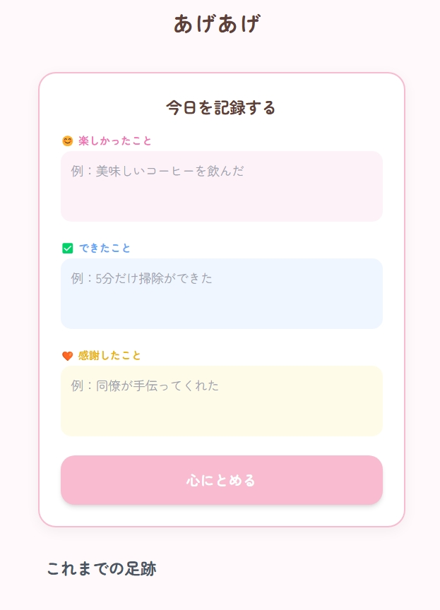
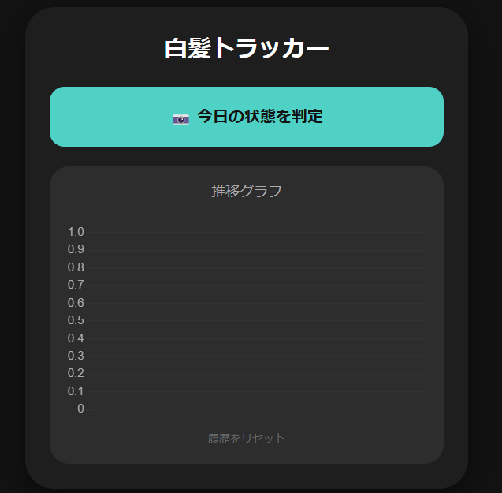
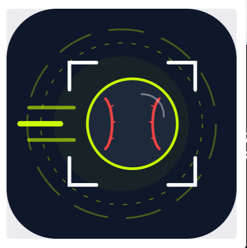
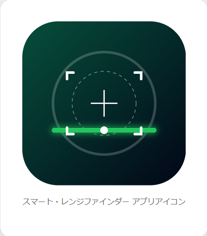
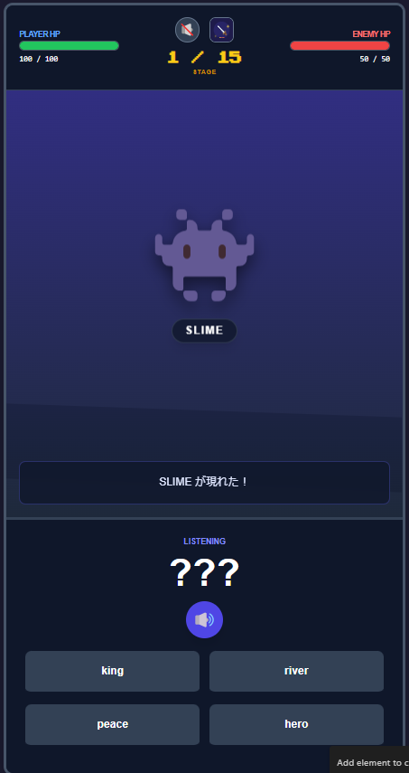
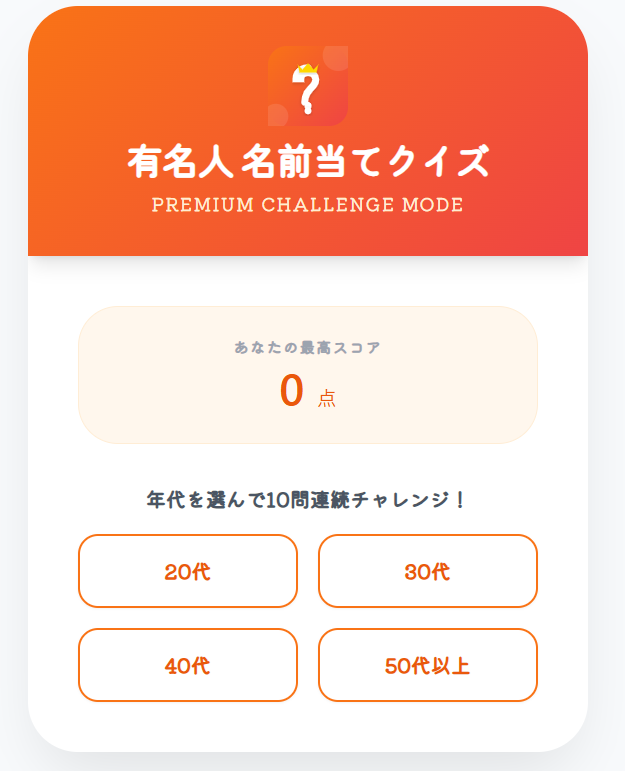
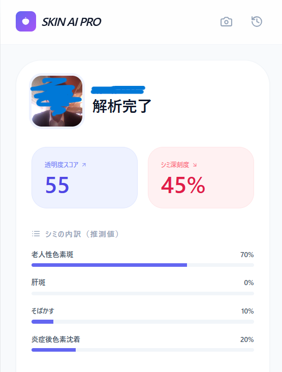
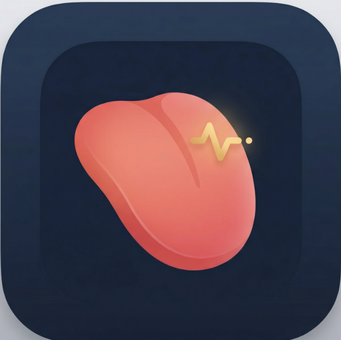
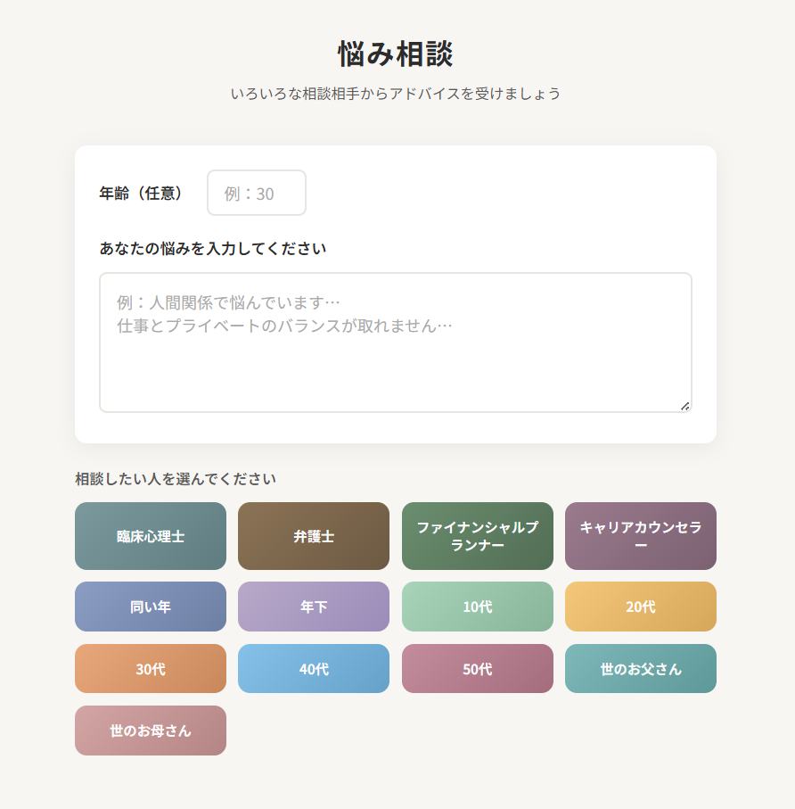
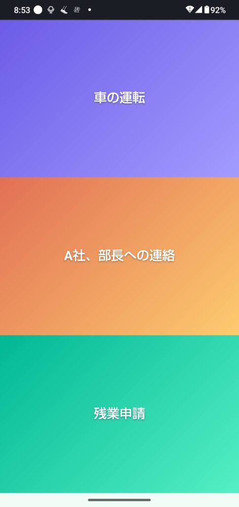

すべてのアプリ
表示中 0件









該当するアプリはありません。ことばを短くするか、カテゴリを「すべて」に戻してください。
このサイトについて
私は、文系でパソコンにはあまり詳しくない現在飲食業に携わる50代前半のサラリーマンです。でもAIに興味を持ちプログラミング知識がない中で、AIを活用し様々なアプリ開発を楽しんでいます。
皆様の中で何か役に立ちそうなアプリがあれば幸いです。ぜひ、試してみてください。
健康・見た目・占い・診断のアプリは、娯楽または参考情報です。医療行為や確定的な鑑定ではありません。急な体調の変化があるときは、医療機関に連絡してください。